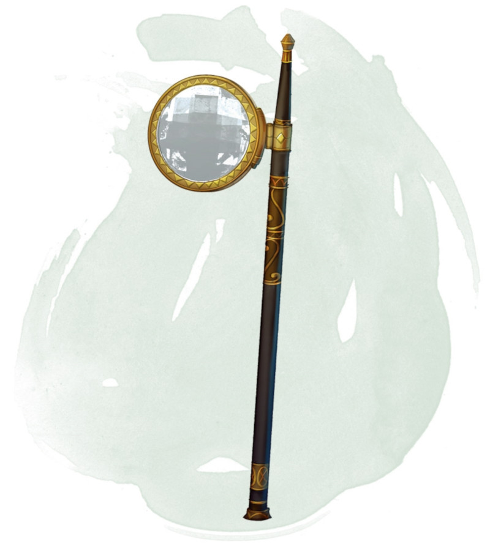

Gemme de vision
[ Gem of Seeing ]
Objet merveilleux, rare (nécessite un lien)
Cette gemme possède 3 charges. En utilisant une action, vous pouvez prononcer le mot de commande de la gemme et dépenser 1 charge. Pour les 10 minutes qui suivent, vous obtenez la vision véritable à 36 mètres lorsque vous regardez au travers de la gemme. La gemme récupère 1d3 charges dépensées chaque jour à l'aube.
Dungeon Master´s Guide (SRD)
